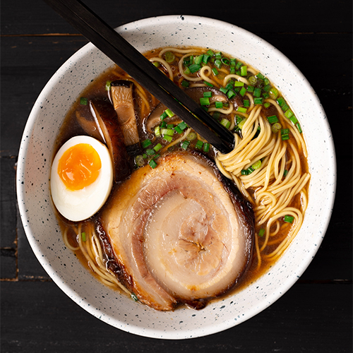

Shoyu Tonkotsu Ramen

What is shoyu tonkotsu ramen?
Shoyu tonkotsu ramen is a type of ramen consisting of tonkotsu broth flavoured with shoyu tare and topped with chashu, soft-boiled eggs, vegetables etc. Each element is made seperately and then assembled.
Ingredients (for one bowl)
- 300ml tonkotsu broth (see homepage for recipe)
- 30ml shoyu tare
- 75g fresh ramen noodles
- 1 soft-boiled egg
- Chashu
- Palmful spring onion
- 8 bamboo shoot pieces
- Handful wood ear mushroom
Steps
- Fill a pot half-full with water and bring to the boil.
- Place the shoyu tare in the bottom of your bowl.
- Put the tonkotsu broth in a second pot and bring to the boil.
- When both pots are boiling, add the noodles to the water and cook for 90 seconds, stirring often. While you're doing this, pour the broth into your bowl.
- Add the noodles to your bowl once cooked.
- Add your toppings (charshu, spring onion, bamboo shoots and wood ear mushroom) and serve.